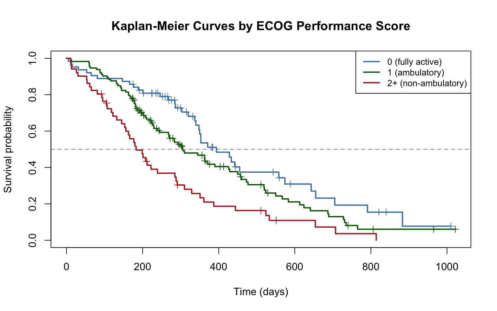

library(tidyverse)
library(this.path)
library(survival)
setwd(this.dir())
data(lung)
lung <- as_tibble(lung) |>
mutate(
sex_label = factor(sex, levels = c(1, 2),
labels = c("Male", "Female")),
pat.karno.gr = factor(
ifelse(pat.karno > 80, "good", "poor")),
ecog_group = factor(ph.ecog, levels = c(0, 1, 2, 3),
labels = c("0 (fully active)",
"1 (ambulatory)",
"2 (in bed <50%)",
"3 (in bed >50%)"))
)Day 10 (PM) Lab: Survival Analysis
SC INBRE Biostatistics Summer Intensive 2026
1 Overview
This lab puts the Day 10 morning material into practice. You will work with time-to-event data, construct Kaplan-Meier curves, run log-rank tests, and fit Cox proportional hazards models using the lung dataset.
How this lab works:
- Part 1 (instructor demo, ~20 min): Follow along as the instructor works through a complete KM and Cox analysis using a different grouping variable than the morning example.
- Part 2 (on your own, ~90 min): Five exercises of increasing difficulty. Create a new
.qmdfile, work through each exercise, render when done.
The Quick Reference Card in Section 3 has all the key functions.
2 Part 1: Instructor Demo
2.1 Setup
2.2 Step 1: Examine the Data
We will look at survival by ECOG performance score group.
lung |>
count(ecog_group, status) |>
mutate(status_label = if_else(status == 2, "Dead", "Censored")) |>
select(-status) |>
pivot_wider(names_from = status_label, values_from = n, values_fill = 0)# A tibble: 5 × 3
ecog_group Censored Dead
<fct> <int> <int>
1 0 (fully active) 26 37
2 1 (ambulatory) 31 82
3 2 (in bed <50%) 6 44
4 3 (in bed >50%) 0 1
5 <NA> 0 1Most patients in this dataset have ECOG scores of 0, 1, or 2. Very few have score 3. As a result, we’ll combine those with a score of 3 to those with a score of 2:
lung <- lung |>
filter(!is.na(ecog_group)) |>
mutate(
ecog_group = fct_collapse(ecog_group,
"0 (fully active)" = "0 (fully active)",
"1 (ambulatory)" = "1 (ambulatory)",
"2+ (non-ambulatory)" = c("2 (in bed <50%)",
"3 (in bed >50%)"))
)
lung |>
count(ecog_group, status) |>
mutate(status_label = if_else(status == 2, "Dead", "Censored")) |>
select(-status) |>
pivot_wider(names_from = status_label, values_from = n, values_fill = 0)# A tibble: 3 × 3
ecog_group Censored Dead
<fct> <int> <int>
1 0 (fully active) 26 37
2 1 (ambulatory) 31 82
3 2+ (non-ambulatory) 6 452.3 Step 2: KM Curves by ECOG Group
km_ecog <- survfit(Surv(time, status == 2) ~ ecog_group, data = lung)
print(km_ecog)Call: survfit(formula = Surv(time, status == 2) ~ ecog_group, data = lung)
n events median 0.95LCL 0.95UCL
ecog_group=0 (fully active) 63 37 394 348 574
ecog_group=1 (ambulatory) 113 82 306 268 429
ecog_group=2+ (non-ambulatory) 51 45 183 153 288plot(km_ecog,
xlab = "Time (days)",
ylab = "Survival probability",
main = "Kaplan-Meier Curves by ECOG Performance Score",
col = c("steelblue", "darkgreen", "firebrick"),
lwd = 2,
conf.int = FALSE,
mark.time = TRUE)
legend("topright",
legend = c("0 (fully active)", "1 (ambulatory)",
"2+ (non-ambulatory)"),
col = c("steelblue", "darkgreen", "firebrick"),
lwd = 2,
cex = 0.85)
abline(h = 0.5, lty = 2, col = "gray50")
There is a clear ordering: patients with better performance scores (lower ECOG) survive longer. Median survival decreases substantially with each step up in ECOG score.
2.4 Step 3: Log-Rank Test
survdiff(Surv(time, status == 2) ~ ecog_group, data = lung)Call:
survdiff(formula = Surv(time, status == 2) ~ ecog_group, data = lung)
N Observed Expected (O-E)^2/E (O-E)^2/V
ecog_group=0 (fully active) 63 37 54.2 5.4331 8.2119
ecog_group=1 (ambulatory) 113 82 83.5 0.0279 0.0573
ecog_group=2+ (non-ambulatory) 51 45 26.3 13.2582 15.9641
Chisq= 19 on 2 degrees of freedom, p= 8e-05 The log-rank test compares survival across all four ECOG groups simultaneously. A small p-value confirms that survival differs across groups well beyond what chance alone would produce.
2.5 Step 4: Simple Cox Model for ECOG
cox_ecog <- coxph(Surv(time, status == 2) ~ ph.ecog, data = lung)
exp(cbind(HR = coef(cox_ecog), confint(cox_ecog))) |> round(3) HR 2.5 % 97.5 %
ph.ecog 1.61 1.289 2.01Treating ECOG as continuous, each one-unit increase in score is associated with approximately 50% higher hazard of death. This is the unadjusted effect.
3 Part 2: Exercises
3.1 Instructions
Step 1. Open a new Quarto document: File -> New File -> Quarto Document. Title it "Day 10 Lab: Survival Analysis", select HTML, click Create.
Step 2. Replace the template content with this YAML and setup chunk:
---
title: "Day 10 Lab: Survival Analysis"
subtitle: "SC INBRE Biostatistics Summer Intensive 2026"
date: today
format:
html:
toc: true
theme: cosmo
execute:
echo: true
warning: false
message: false
---
```{r}
library(tidyverse)
library(this.path)
library(survival)
setwd(this.dir())
data(lung)
lung <- as_tibble(lung) |>
mutate(
sex_label = factor(sex, levels = c(1, 2), labels = c("Male", "Female")),
ecog_group = factor(ph.ecog, levels = c(0, 1, 2, 3),
labels = c("0 (fully active)", "1 (ambulatory)",
"2 (in bed <50%)", "3 (in bed >50%)"))
)
```Step 3. Work through Exercises 1–5 in order. For each one, add a code chunk, write and run your code, and add 2–3 sentences interpreting the result in plain language.
Step 4. Render when finished.
Tip
Before asking for help, check the Quick Reference Card in Section 3. The most common errors in survival analysis are: (1) forgetting status == 2 inside Surv(), and (2) passing a factor instead of a numeric variable to cox_ph when you intend a continuous predictor.
Note
Exercises 1–3 cover the core KM and log-rank material. Exercise 4 builds a Cox model and interprets hazard ratios. Exercise 5 is a full workflow tying everything together.
Exercise 1 – Exploring the Data.
Use
count()to tabulate the number of events (status == 2) and censored observations (status == 1) separately for males and females. What proportion of each sex group died during the study?Use
group_by()andsummarize()to compute the mean and median follow-up time separately for those who died and those who were censored. How do they compare? What does this tell you about the timing of censoring? (Hint: see section 4.2 of the morning notes)Produce a histogram of follow-up times (
time), colored by event status. Usefill = if_else(status == 2, "Dead", "Censored")insideaes()andscale_fill_manual()to use meaningful colors.
# your code hereExercise 2 – Kaplan-Meier Curve for the Full Cohort.
Fit a KM estimator for the overall cohort using
survfit(Surv(time, status == 2) ~ 1, data = lung). Assign it to an object and useprint()to see the summary.What is the estimated median survival time and its 95% confidence interval? In plain language, what does the median survival time mean?
Plot the KM curve with
plot(). Includeconf.int = TRUEandmark.time = TRUE. Add a horizontal dashed line at 0.5 usingabline(). Label the axes clearly.From the curve, approximately what is \(\hat{S}(365)\), the estimated probability of surviving more than one year? (Read it from the plot or use
summary(km_fit, times = 365).)
# your code hereExercise 3 – Comparing Survival Curves.
Fit separate KM curves by sex using
survfit(Surv(time, status == 2) ~ pat.karno.gr, data = lung). Useprint()to get median survival for each group. Which group has longer median survival?Plot the two KM curves on the same figure using different colors. Add a legend. Do the curves separate early, late, or consistently throughout follow-up?
Run a log-rank test using
survdiff(Surv(time, status == 2) ~ pat.karno.gr, data = lung). Report the chi-squared statistic and p-value. Is there statistically significant evidence that survival differs by sex?Interpretation. The log-rank test gives a p-value. What does a small p-value actually tell us? What does it NOT tell us that the Cox model will?
# your code hereExercise 4 – Cox Proportional Hazards Model.
Fit a Cox model with
pat.karno.gras the only predictor:coxph(Surv(time, status == 2) ~ pat.karno.gr, data = lung). Useexp(cbind(HR = coef(model), confint(model)))to get the hazard ratio and 95% CI.Interpret the HR for sex in one sentence. Remember: HR > 1 means higher hazard (worse survival), HR < 1 means lower hazard (better survival).
Now add age and sex to the model. After adjusting for these sex, does the HR for
pat.karno.grchange?Report and interpret the adjusted HR for
pat.karno.gr.Use
anova(reduced_model, full_model)to formally test whether age and sex jointly add significant prognostic information beyondpat.karno.gralone.
# your code hereExercise 5 (Challenge) – Full Workflow: Building a Prognostic Model.
Build a multivariable Cox model for overall survival using several predictors.
Restrict to complete cases on
time,status,sex,age,ph.ecog, andwt.lossusingdrop_na(). How many patients remain?Check which variables are associated with survival by fitting a separate simple Cox model for each predictor:
sex_label,age,ph.ecog, andwt.loss. Report the unadjusted HR and 95% CI for each.Fit a full Cox model with all four predictors and report the adjusted HRs. Which predictors remain significant after adjustment?
Use
anova()to test whetherwt.lossadds significant information beyond the other three predictors. Report the LRT p-value.Check the proportional hazards assumption for sex by plotting the KM curves on a log-log scale (
fun = "cloglog"inplot(survfit(...))). Do the curves look approximately parallel?Discussion. In the morning lecture, the sex HR was about 0.59 in the simple model and 0.58 in the adjusted model. Based on your results in this exercise, do the additional variables (age, ECOG, weight loss) appear to confound the sex-survival relationship? How do you know?
# your code here4 Quick Reference Card
4.1 Setup
library(tidyverse)
library(this.path)
library(survival)
setwd(this.dir())
data(lung)
lung <- as_tibble(lung)4.2 Creating a Survival Object
# status == 2 means event occurred; status == 1 means censored
Surv(time, status == 2)
# Add to dataset
df <- df |> mutate(surv = Surv(time, status == 2))4.3 Kaplan-Meier Estimation
# Overall KM curve
km_fit <- survfit(Surv(time, status == 2) ~ 1, data = df)
# KM curve by group
km_by_group <- survfit(Surv(time, status == 2) ~ group, data = df)
# Print median survival
print(km_fit)
summary(km_fit)$table
# Survival probability at specific times
summary(km_fit, times = c(180, 365, 730))4.4 Plotting KM Curves
# Basic plot
plot(km_fit,
xlab = "Time (days)",
ylab = "Survival probability",
col = "steelblue",
lwd = 2,
conf.int = TRUE,
mark.time = TRUE) # tick marks for censored observations
# Add horizontal line at median (S = 0.5)
abline(h = 0.5, lty = 2, col = "gray50")
# Two-group plot
plot(km_sex,
col = c("steelblue", "firebrick"),
lwd = 2,
conf.int = FALSE,
mark.time = TRUE)
legend("topright",
legend = c("Group 1", "Group 2"),
col = c("steelblue", "firebrick"),
lwd = 2)4.5 Log-Rank Test
survdiff(Surv(time, status == 2) ~ group, data = df)
# Reports chi-squared statistic and p-value4.6 Cox Proportional Hazards Model
# Simple Cox model
cox_model <- coxph(Surv(time, status == 2) ~ sex + age, data = df)
summary(cox_model)
# Hazard ratios and 95% CIs
exp(cbind(HR = coef(cox_model), confint(cox_model)))
# Rescale a continuous HR to meaningful units
exp(10 * coef(cox_model)["age"]) # HR for 10-year age increase
exp(2 * coef(cox_model)["ph.ecog"]) # HR for 2-unit ECOG increase
# Compare nested models (LRT)
anova(cox_reduced, cox_full)
# Complete cases (for fair model comparisons)
vars <- c("time", "status", "sex", "age", "ph.ecog")
df_cc <- df |> drop_na(all_of(vars))4.7 Checking the Proportional Hazards Assumption
# Log-log plot: curves should be approximately parallel
plot(km_by_group,
fun = "cloglog",
xlab = "Log time",
ylab = "log(-log(S(t)))")4.8 Interpreting Hazard Ratios
| HR | Meaning |
|---|---|
| HR = 1 | No difference in hazard |
| HR = 2.0 | Twice the hazard (worse survival) |
| HR = 0.5 | Half the hazard (better survival) |
| HR = 1.5 | 50% higher hazard |
| HR = 0.7 | 30% lower hazard |
| CI excludes 1 | Statistically significant at alpha = 0.05 |
4.9 Key Vocabulary
| Term | Meaning |
|---|---|
| Event | The outcome of interest (death, relapse, etc.) |
| Censored | Participant left follow-up without the event |
| S(t) | Probability of surviving beyond time t |
| h(t) | Instantaneous event rate at time t |
| Median survival | Time at which S(t) = 0.5 |
| HR | Multiplicative effect on the hazard |
| Log-rank test | Tests H0: survival curves are equal |
| PH assumption | HR is constant over time |